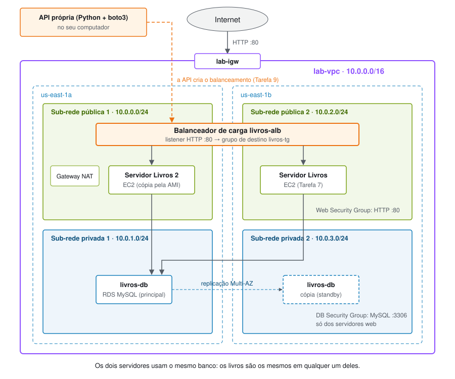
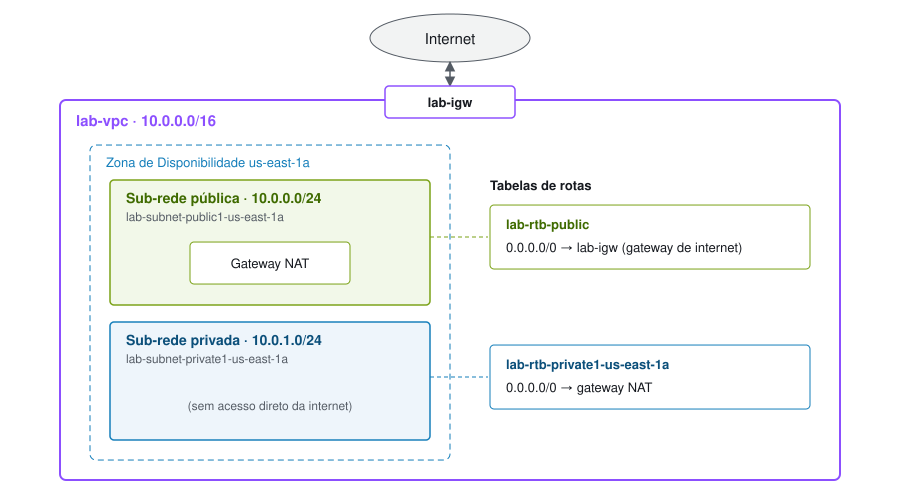
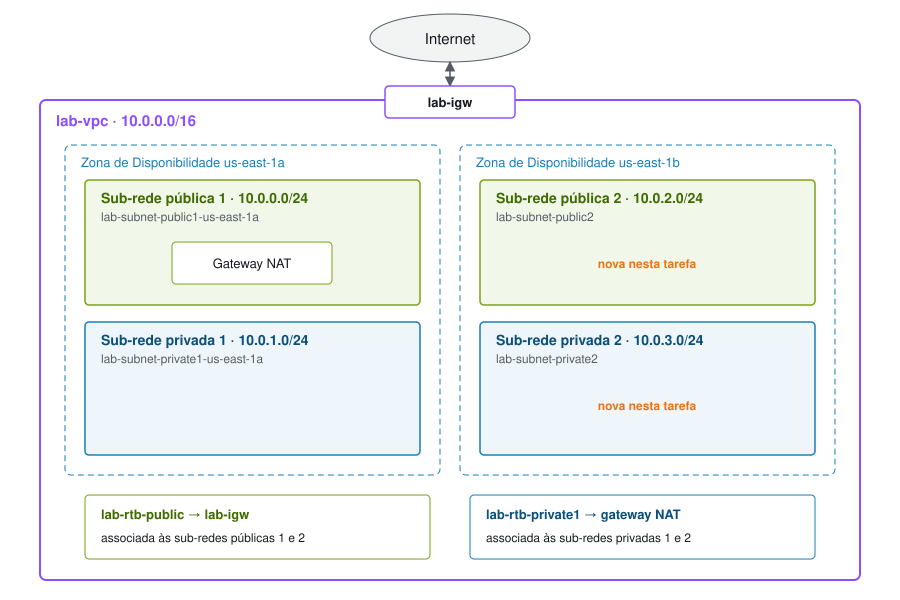

Elaborado por Bruna Cristina Kato Baptista e Elizeu Elias Ribeiro
Projeto final da disciplina Fundamentos de Computação em Nuvem.
Neste projeto, você criará uma VPC própria, um banco de dados MySQL no Amazon RDS e um servidor web no Amazon EC2 com a aplicação Livros Recomendados. Em seguida, uma API própria colocará um balanceador de carga na frente de dois servidores.
O projeto junta o que foi feito nos laboratórios:
| Parte do projeto | Laboratório de referência | Tarefas |
|---|---|---|
| 1. Máquina virtual + página web | Lab 2 (VPC e servidor web) e Lab 3 (EC2) | 1, 2, 3 e 7 |
| 2. Banco de dados | Lab 5 (RDS) | 4, 5, 6 e 8 |
| 3. Balanceamento de carga, por uma API própria | Lab 6 (ELB) | 9 |
Depois de concluir o projeto, você será capaz de:
O projeto leva aproximadamente 60 minutos, contando as esperas do banco de dados e do balanceador.
No ambiente do Learner Lab, alguns serviços e ações podem estar restritos. Se aparecer um erro de permissão, confira se a região é Norte da Virgínia (us-east-1) e se os tipos escolhidos são t2.micro (EC2) e db.t3.micro (RDS).

O servidor web baixará a aplicação de um repositório público no GitHub, assim como no Lab 2 o servidor baixa o lab-app.zip.
Acesse https://github.com e escolha New repository.
livros-appSelecione uploading an existing file e arraste os arquivos e as pastas desta aplicação (index.php, rds.php, as pastas sql e css etc.). Escolha Commit changes.
Confirme que o download funciona abrindo no navegador: https://github.com/SEU-USUARIO/livros-app/archive/refs/heads/main.zip
O repositório pode ser público porque não contém nenhuma senha: a conexão com o banco é informada na página RDS da aplicação (Tarefa 8) e fica gravada somente dentro do servidor.
No Learner Lab, escolha Start Lab e aguarde até o ícone ao lado de AWS ficar verde.
Escolha AWS para abrir o console em uma nova guia.
Dica: os valores que aparecem neste formato devem ser digitados exatamente como estão.
Nesta tarefa, você usará a opção VPC e muito mais no console da VPC para criar vários recursos de uma vez: uma VPC, um gateway de internet, uma sub-rede pública e uma sub-rede privada em uma Zona de Disponibilidade, duas tabelas de rotas e um gateway NAT.
Na caixa de pesquisa à direita de Services , procure e selecione VPC.
Comece a criar a VPC.
Configure os detalhes no painel Configurações da VPC:
lab.10.0.0.0/16.10.0.0.0/2410.0.1.0/24No painel Visualização, confirme os nomes: lab-vpc, lab-subnet-public1-us-east-1a, lab-subnet-private1-us-east-1a, lab-rtb-public, lab-rtb-private1-us-east-1a, lab-igw e lab-nat-public1-us-east-1a.
Escolha Criar VPC e aguarde até que todos os recursos sejam criados. O gateway NAT leva alguns minutos.
Escolha Visualizar VPC.
O gateway de internet permite a comunicação entre a VPC e a internet. A sub-rede pública lab-subnet-public1-us-east-1a (10.0.0.x) é pública porque a tabela de rotas dela envia o tráfego 0.0.0.0/0 para o gateway de internet.
O gateway NAT permite que recursos nas sub-redes privadas acessem a internet sem receber conexões vindas dela. A sub-rede privada lab-subnet-private1-us-east-1a contém os endereços 10.0.1.x.

Nesta tarefa, você criará uma segunda sub-rede pública e uma segunda sub-rede privada em outra Zona de Disponibilidade. O banco de dados exige sub-redes em duas zonas, e o balanceador de carga também.
No painel de navegação à esquerda, escolha Sub-redes.
Selecione Criar sub-rede e configure:
lab-subnet-public210.0.2.0/24Escolha Criar sub-rede.
Selecione Criar sub-rede novamente e configure:
lab-vpclab-subnet-private210.0.3.0/24Escolha Criar sub-rede.
Agora, você associará cada nova sub-rede à tabela de rotas certa. Uma tabela de rotas contém as regras que definem para onde o tráfego de rede é enviado.
No painel de navegação à esquerda, selecione Tabelas de rotas.
Selecione a tabela lab-rtb-private1-us-east-1a e, no painel inferior, a guia Rotas.
O destino 0.0.0.0/0 aponta para nat-xxxxxxxx: o tráfego para a internet sai pelo gateway NAT.
Escolha a guia Associações de sub-rede → Editar associações de sub-rede.
Mantenha lab-subnet-private1-us-east-1a selecionada, selecione também lab-subnet-private2 e escolha Salvar associações.
Selecione a tabela lab-rtb-public (desmarque as demais) e confira na guia Rotas que 0.0.0.0/0 aponta para igw-xxxxxxxx, o gateway de internet.
Na guia Associações de sub-rede, escolha Editar associações de sub-rede.
Mantenha lab-subnet-public1-us-east-1a selecionada, selecione também lab-subnet-public2 e escolha Salvar associações.
A VPC agora tem sub-redes públicas e privadas em duas Zonas de Disponibilidade.

Nesta tarefa, você criará um grupo de segurança, que atua como um firewall virtual, permitindo acesso HTTP aos servidores web.
No painel de navegação à esquerda, escolha Grupos de segurança.
Selecione Criar grupo de segurança e configure:
Web Security GroupEnable HTTP accessEm Regras de entrada, selecione Adicionar regra e configure:
Permit web requestsEscolha Criar grupo de segurança.
Nesta tarefa, você criará o grupo de segurança do banco, permitindo conexões somente dos servidores que estão no Web Security Group. Ele precisa ser criado depois do Web Security Group, porque aponta para ele.
Em Grupos de segurança, selecione Criar grupo de segurança e configure:
DB Security GroupPermit access from Web Security GroupEm Regras de entrada, selecione Adicionar regra e configure:
sg e selecione Web Security Group.Essa regra permite tráfego na porta 3306 apenas de instâncias associadas ao Web Security Group. Nenhum outro endereço da internet consegue se conectar ao banco.
Escolha Criar grupo de segurança.
Nesta tarefa, você criará um DB subnet group, que informa ao RDS em quais sub-redes o banco pode ficar. Cada grupo exige sub-redes em pelo menos duas Zonas de Disponibilidade.
Na caixa de pesquisa à direita de Services , procure e selecione RDS.
No painel de navegação à esquerda, escolha Grupos de sub-redes.
Escolha Criar grupo de sub-redes de banco de dados e configure:
DB-Subnet-GroupDB Subnet GroupEm Adicionar sub-redes:
Escolha Criar.
Nesta tarefa, você criará um banco MySQL Multi-AZ. O RDS mantém uma instância principal e uma cópia sincronizada (standby) em outra Zona de Disponibilidade. Se a principal falhar, o RDS passa a usar a cópia.
No painel de navegação à esquerda, escolha Bancos de dados e depois Criar banco de dados.
Em Opções do mecanismo, selecione MySQL.
Em Modelos, escolha Dev/Test.
Em Disponibilidade e durabilidade, escolha Instância de banco de dados Multi-AZ.
Em Configurações:
livros-dbmainEm Configuração da instância, selecione Classes com capacidade de intermitência e db.t3.micro.
Em Armazenamento: Tipo de armazenamento SSD de uso geral e Armazenamento alocado 20.
Em Conectividade:
Em Monitoramento, desmarque Habilitar o monitoramento avançado.
Em Configuração adicional:
livrosdbEscolha Criar banco de dados.
Se aparecer um erro com iam:CreateRole, confira se o monitoramento avançado foi desmarcado.
Escolha livros-db e aguarde o status mudar para Disponível (cerca de 10 minutos, por ser Multi-AZ).
Na seção Conectividade e segurança, copie o Endpoint (algo como livros-db.xxxx.us-east-1.rds.amazonaws.com) e guarde em um editor de texto.
Enquanto o banco é criado, você pode fazer a Tarefa 7.
Nesta tarefa, você executará uma instância do EC2 na sub-rede pública. Um script de dados do usuário instalará o Apache e o PHP e baixará a aplicação do GitHub, como no Lab 2.
Na caixa de pesquisa à direita de Services , procure e selecione EC2.
No menu Executar instância, selecione Executar instância.
Dê o nome Servidor Livros.
Em AMI, mantenha Amazon Linux e Amazon Linux 2023 AMI.
Em Tipo de instância, mantenha t2.micro.
Em Nome do par de chaves, selecione vockey.
Ao lado de Configurações de rede, selecione Editar e configure:
Mantenha o armazenamento padrão.
Expanda Detalhes avançados e cole o script abaixo em Dados do usuário, trocando SEU-USUARIO pelo seu usuário do GitHub:
#!/bin/bash
# Install Apache Web Server and PHP
dnf install -y httpd wget unzip php php-mysqli
# Download app files
wget https://github.com/SEU-USUARIO/livros-app/archive/refs/heads/main.zip
unzip main.zip
cp -r livros-app-main/* /var/www/html/
# Config file for the RDS form (outside the public folder)
touch /var/www/livros-config.php
chown apache:apache /var/www/livros-config.php
chmod 600 /var/www/livros-config.php
# Turn on web server
chkconfig httpd on
service httpd startO script roda como usuário raiz, uma única vez, quando a instância é criada. Ele instala o servidor web e o PHP com suporte a MySQL, baixa a aplicação, prepara o arquivo onde a conexão com o banco será gravada e liga o servidor web.
Escolha Executar instância e depois Visualizar todas as instâncias.
Aguarde o Servidor Livros mostrar 2/2 verificações aprovadas.
Selecione o Servidor Livros e copie o Endereço IPv4 público na guia Detalhes.
Abra uma nova guia, digite http:// seguido do IP público e pressione Enter. Use http, não https.
A página mostra o Instance ID, a Availability Zone e a carga da CPU do servidor.
Nesta tarefa, você conectará a aplicação ao banco criado na Tarefa 6, como na Tarefa 4 do Lab 5.
Na página da aplicação, escolha RDS no menu.
Preencha:
livrosdbmainEscolha Submit.
A aplicação testa a conexão, executa o script sql/livros.sql (que cria as tabelas e cadastra 9 livros iniciais) e grava a configuração. Em 5 segundos, abre a lista de Livros recomendados.
Teste a aplicação: escolha Adicionar livro, Editar e Remover.
Os dados ficam no banco RDS, e não no servidor. A cópia Multi-AZ é atualizada automaticamente na segunda Zona de Disponibilidade.
Nesta tarefa, uma API própria, escrita em Python (Flask + boto3), enviará os comandos para a AWS montar o balanceamento de carga, como no Lab 6. A API está na pasta api-balanceamento.
No seu computador, configure as credenciais: no Learner Lab, abra AWS Details → AWS CLI: Show e cole o conteúdo em ~/.aws/credentials.
Instale e ligue a API:
cd api-balanceamento
python3 -m venv .venv
source .venv/bin/activate
pip install -r requirements.txt
python3 api_balanceamento.pyEm outro terminal, envie o pedido:
curl -X POST http://localhost:5000/balanceamentoA API executa cinco passos (de 8 a 12 minutos):
livros-tg, com verificação de saúde na página inicial.livros-alb nas duas sub-redes públicas, com um listener na porta 80.Durante o passo 1, o Servidor Livros reinicia por cerca de 1 minuto.
Abra a url devolvida pela API e atualize a página algumas vezes. O Instance ID alterna entre os dois servidores, e a lista de livros na página RDS é a mesma nos dois, porque eles usam o mesmo banco.
Consulte a saúde dos servidores:
curl http://localhost:5000/statusTeste a alta disponibilidade: no console do EC2, selecione Servidor Livros 2 → Estado da instância → Interromper instância. Em até 30 segundos, o /status mostra esse servidor como unhealthy, e a aplicação continua no ar pelo outro servidor.
O balanceador, o gateway NAT e o banco Multi-AZ consomem crédito do Learner Lab enquanto existirem.
Desfaça o balanceamento: curl -X DELETE http://localhost:5000/balanceamento
No EC2, encerre o Servidor Livros.
No RDS, exclua o livros-db (desmarque Criar snapshot final) e, depois, o DB-Subnet-Group.
Na VPC, exclua o DB Security Group e depois o Web Security Group.
Exclua o gateway NAT (Gateways NAT) e libere o IP elástico dele.
Exclua a lab-vpc (Suas VPCs → Ações → Excluir VPC).
livros-app/
├── index.php # página inicial: Instance ID, zona e carga da CPU
├── load.php # Load Test
├── rds.php # decide: formulário de conexão ou lista de livros
├── rds-config.php # formulário Endpoint / Database / Username / Password
├── rds-write-config.php # testa a conexão, executa o sql/livros.sql e grava a configuração
├── rds-livros.php # lista de livros (adicionar, editar, remover)
├── comum.php # funções usadas por todas as páginas
├── menu.php # menu do topo
├── sql/livros.sql # cria as tabelas (livros e créditos) e cadastra 9 livros iniciais
├── css/style.css
└── user-data.sh # script de dados do usuário (Tarefa 7)Os códigos dos livros iniciais no sql/livros.sql são exemplos no formato de número de chamada. Substitua pelos códigos reais do catálogo da biblioteca.
| Na aplicação do laboratório | Nesta aplicação |
|---|---|
| O texto digitado entra direto no SQL (SQL injection) | Prepared statements (prepare + bind_param) |
| Os dados são exibidos sem escapar (XSS) | htmlspecialchars em tudo o que é exibido |
Remover é um link (?mode=remove&id=3) |
Remover é um botão (POST) |
A senha do banco fica em /var/www/html (pasta pública) |
Em /var/www/livros-config.php, fora da pasta pública, com chmod 600 |
| A senha aparece na tela durante a configuração | A senha nunca é exibida |
Funções mysql_*, que não existem no PHP 7 ou superior |
mysqli, compatível com o PHP atual |
| O formulário pode ser reenviado e troca o banco | Depois de configurado, o banco não pode ser trocado pela página |
Limitação conhecida: qualquer pessoa com o endereço pode adicionar, editar e remover livros, como na aplicação do laboratório.
Elaborado por Bruna Cristina Kato Baptista e Elizeu Elias Ribeiro.